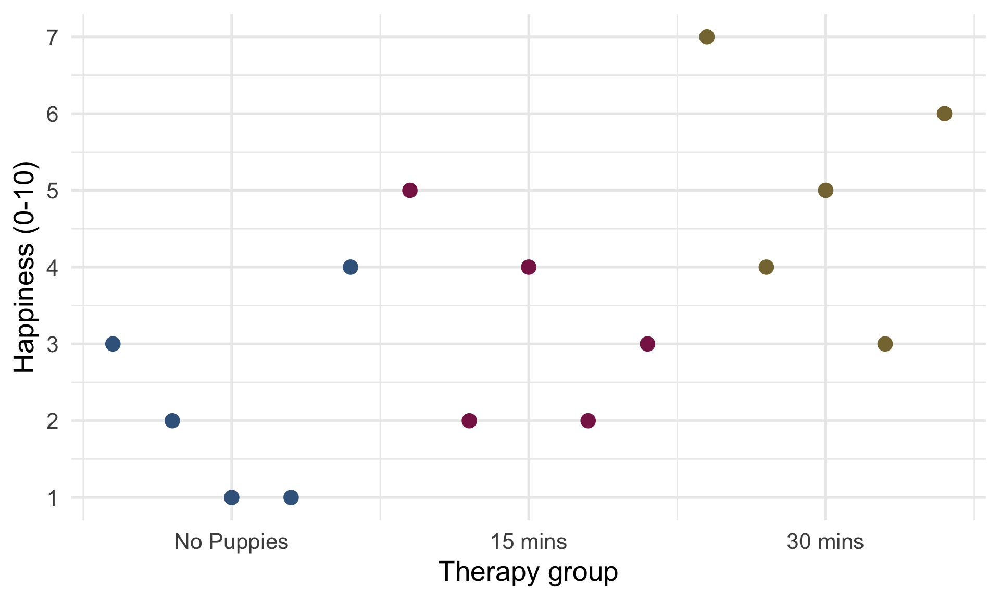
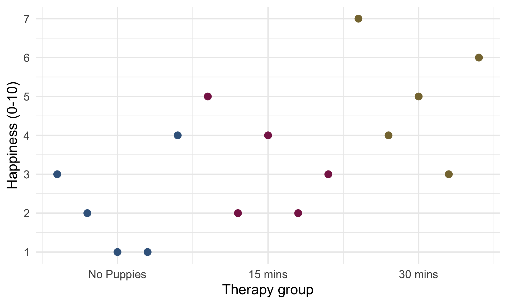
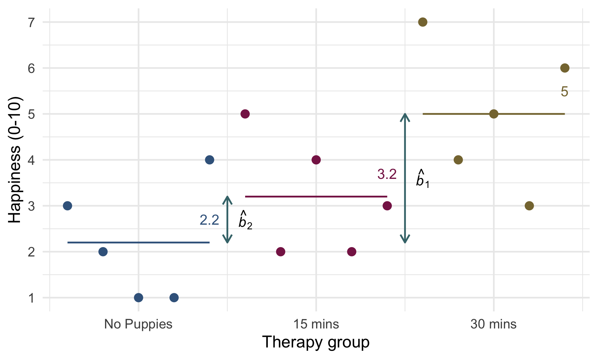
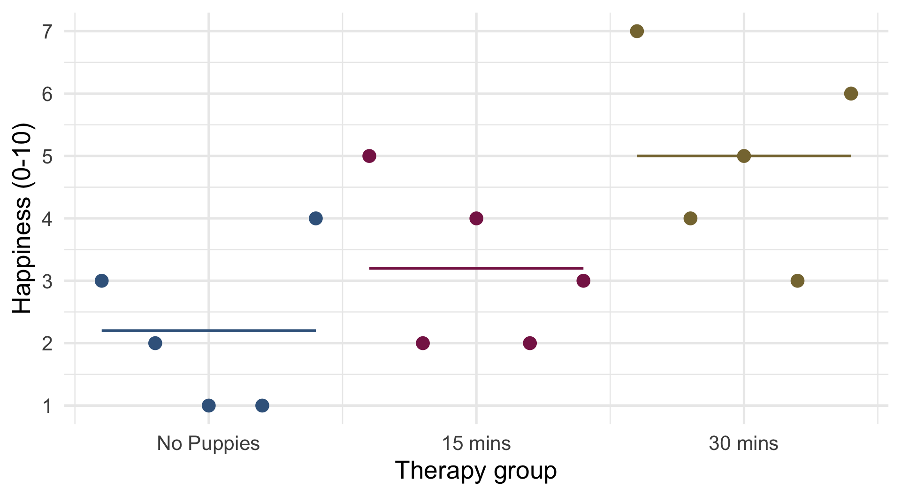
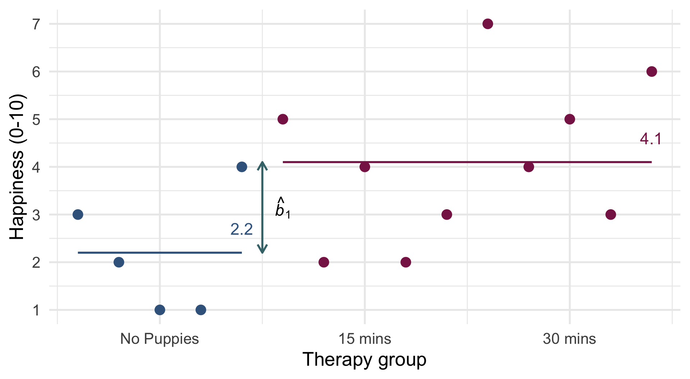
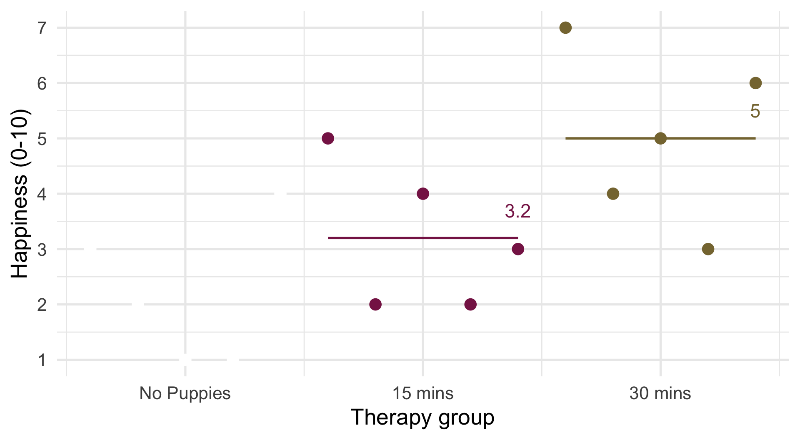

| No puppies | 15 mins | 30 mins | |
|---|---|---|---|
| 3 | 5 | 7 | |
| 2 | 2 | 4 | |
| 1 | 4 | 5 | |
| 1 | 2 | 3 | |
| 4 | 3 | 6 | |
| Mean | 2.20 | 3.20 | 5.00 |
| Variance (s2) | 1.70 | 1.70 | 2.50 |
| Standard deviation (s) | 1.30 | 1.30 | 1.58 |
Contrast coding
Different ways to explore categorical predictors
University of Sussex


|


Load and Look

\(\text{Overall mean (} \bar{X}_\text{grand}\text{)} = 3.467\)
Visualize the ‘dummy’ model


Visualize the ‘dummy’ model

Visualize the ‘dummy’ model

Evaluate assumptions

Interpret parameter estimates, CIs and tests
| Parameter | Coefficient | SE | 95% CI | t(12) | p |
|---|---|---|---|---|---|
| (Intercept) | 2.20 | 0.63 | (0.83, 3.57) | 3.51 | 0.004 |
| dose (15 mins) | 1.00 | 0.89 | (-0.93, 2.93) | 1.13 | 0.282 |
| dose (30 mins) | 2.80 | 0.89 | (0.87, 4.73) | 3.16 | 0.008 |

Visualize the ‘dummy’ model

Visualize the ‘dummy’ model

Visualize the ‘dummy’ model

Visualize the contrast model

Visualize contrast 1

Visualize contrast 1

\[ \begin{aligned} \hat{b}_1 &= 4.1-2.2 = 1.9 \end{aligned} \]
Visualize contrast 2

Visualize contrast 2

\[ \begin{aligned} \hat{b}_2 &= 5-3.2 = 1.8 \end{aligned} \]
Evaluate
Interpret parameter estimates, CIs and tests
| Parameter | Coefficient | SE | 95% CI | t(12) | p |
|---|---|---|---|---|---|
| (Intercept) | 3.47 | 0.36 | (2.68, 4.26) | 9.57 | < .001 |
| dose (puppy_vs_none) | 1.90 | 0.77 | (0.23, 3.57) | 2.47 | 0.029 |
| dose (long_vs_short) | 1.80 | 0.89 | (-0.13, 3.73) | 2.03 | 0.065 |